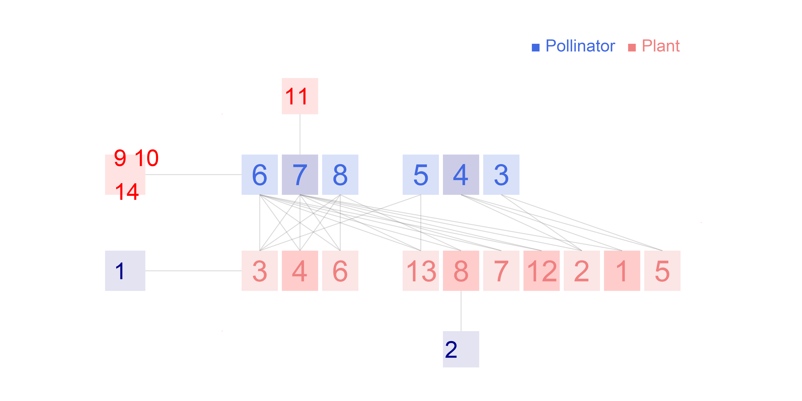

Network: M_PL_064

Pollinator 1 Amazilia fimbriata, 2 Amazilia lactea, 3 Calliphlox amethystina, 4 Chlorostilbon aureoventris, 5 Phaethornis pretrei, 6 Phaethornis ruber, 7 Phaethornis squalidus, 8Thalurania glucopis
Plant
1 Corymborkis flava, 2 Fridericia speciosa, 3 Geissomeria schottiana, 4 Heliconia simulans, 5 Hyptis asperrima, 6 Justicia scheidweileri, 7 Lantana camara, 8 Mendoncia velloziana, 9 Mutisia speciosa, 10 Passiflora kermesina, 11 Passiflora speciosa, 12 Rubus rosaefolius, 13 Ruellia brevifolia, 14Ruellia subsessilis
Abreu, C.R.M. & Vieira, M.F. (2004) Os beija-flores e seus recursos florais em um fragmento florestal de Vii�osa, sudeste brasileiro. Lundiana, 5, 129-134. Reserva Florestal Mata do Parai�so, Brazil